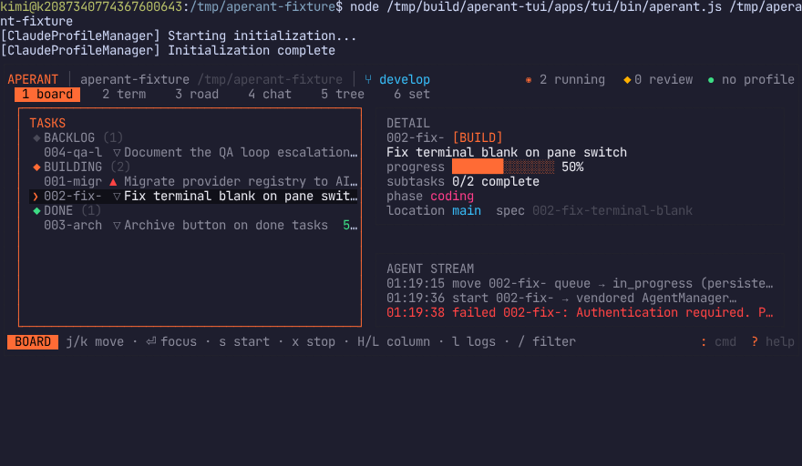

The whole agent runtime,
now in your terminal
Aperant TUI runs the vendored Aperant desktop agent runtime in-process in plain Node — no Electron, no IPC, no API gateway. The TypeScript services the desktop app uses are imported directly by an Ink terminal UI through a real electron-shim. Every claim on this site is backed by a gate run with recorded evidence.
1,288 upstream files carried unmodified with a SHA-256 manifest. The TUI imports
src/main/** the same way the desktop does.
An electron-shim provides real Node implementations of the Electron API subset. Empty states report factual reasons. Unsupported calls fail loudly.
Each phase ends in a scripted end-user drive of the real TUI — per-step JSON envelopes, screenshots, asciicast recordings, per-criterion verdicts.
Where the build stands
* agent streaming requires provider credentials the build environment does not have — reported UNVERIFIED, never simulated.
Real gate evidence
